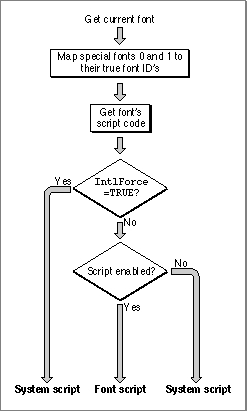

Legacy Document
Important: The information in this document is obsolete and should not be used for new development.
Important: The information in this document is obsolete and should not be used for new development.


Obtaining Resource Information
Many Text Utilities routines perform operations--such as modifying text or sorting strings--that require information from resources. Some routines determine which resources to use by checking a resource parameter; others check a script code parameter.For a Text Utilities routine that uses a resource parameter, you can explicitly specify the resource you want to use, or you can specify
NIL. The valueNILcauses the routine to use the resources associated with the current script. The current script is either the system script (the script associated with the currently running version of Macintosh system software) or the font script (the script of the current font in the current graphics port), and is determined by the value of the international resources selection flag, which is represented by the global variableIntlForce. If the value of this flag isTRUE, the current script is the system script; if the value of the flag isFALSE, the current script is the font script. (See Figure 5-1.)Figure 5-1 Determining the current script
 The international resources selection flag is initialized at startup from the system script configuration (
'itlc') resource. For most system scripts, the international resources selection flag has a default value ofTRUE. If you want to change its value, you can use theSetSMVariablefunction with thesmIntlForceselector. If you want to test its values, you can use theGetSMVariablefunction with the same selector. TheGetSMVariableandSetSMVariablefunctions are described in the chapter "Script Manager" in this book.The value of the international resources selection flag actually controls the operation of the
GetIntlResourcefunction, which is used by other routines to access the international resources. The operation ofGetIntlResourceis described in detail in the chapter "Script Manager" in this book.Other Text Utilities routines use a script code parameter, in which you specify the unique number that defines the script system whose resources you want to use.
Constants for all defined script codes are listed in the chapter "Script Manager" in this book. If you wish, you can specify the following two special constants in the script code parameter:
smSystemScript, which indicates that the routine should use the international resources of the system script, andsmCurrentScript, which indicates that the routine should use the font script.